| 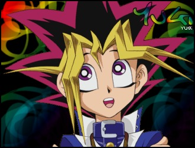 | Yugi is a kind hearted and sweet boy. He learned how to play the duel monsters card game from his grandfather and is a powerful duelist. He believes in the heart of the cards and the powers of friendship. After receiving the Millennium Puzzle, Yugi felt another presence within him. At first it scared him, but soon he realized that this presence protected him. Yugi and his dark half, Yami Yugi, get along remarkably well. Sometimes Yami Yugi doesn't listen to Yugi. When Yami Yugi battled Kaiba for his star chips, Yami Yugi ordered the attack to win the game. However, attacking would mean risking Kaiba's life. Yugi overpowers his dark side and allows Kaiba to win. This leaves Yugi shaken, but soon the relationship between him and his Yami is repaired. Yami Yugi wouldn't do anything to hurt Yugi or the people he cared about. Seto Kaiba and Yugi are rivals. They are fairly evenly matched in power, but the way they think is different. Yugi believes in his friends and the heart of the cards. Kaiba, on the other hand, wishes to gain power and become the best any way that he can. This ends up being Kaiba's weakness and allows Yugi to defeat him. Yugi always wished for true friends, and when he finally completed his Millennium Puzzle, his wish came true. Joey, the boy who once picked on him, now became his closest friend, and that friendship has only grown since. Throughout the series, Yugi and Joey fight side by side and even when they fight each other, they still maintain their strong sense of friendship. Later in the series when Marik takes control of Joey's mind, it's Yugi that tells Yami Yugi to let him fight his friend. Even when Joey is threatening to kill him, Yugi still believes in his true friend. He even tells Joey that he loves him. In the end, Yugi is able to free Joey and risks his life to do so. All of Yugi's other friends are important to him too. He'll do anything to keep them safe - even if it means his own destruction. Yugi is also owner of the god card, Osiris. Yugi's favorite card is the Dark Magician and he seems to favor Magician type cards, as he is known to use Dark Magician Girl aswell. Yugi is the main character of the series. And through it all, Yugi must not only overcome the trials and tribulations that face him, but learn to face himself, and let his true power shine through. |
| 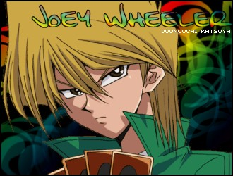 | Joey is the crazy comic relief of the series, but there's more to him than meets the eye. He was once a bully and even picked on Yugi. When Yugi was still putting his puzzle together, Joey took a piece so that Yugi couldn't finish it. Joey couldn't sit back and bother Yugi though. He eventually returned the piece and after Yugi completed the puzzle, they become friends, much to Yugi's delight. Joey and Yugi are best friends. Yugi helps Joey out with the card game, and Joey seems to act as Yugi's body guard (remember, he used to be a bully). Joey is also close friends with Tristan and Tea. They'll do anything to help each other out. Everything Joey does is for his sister, Shizuka. She was born with bad eyes and only an expensive operation can save her vision. Joey enters the Duelist Kingdom just so that he may win the prize money to help his sister pay for this operation. They were separated when their parent's divorced, but never stopped caring about each other. Joey loves his sister very much and would gladly risk his own life to save her. Joey is a top duelist. His favorite card is the Flame Swordsman, but he seems to have a deeper connection with the Red Eyes Black Dragon. Joey loves having fun. He is known to act without thinking and jump into things. Luckily, Yugi is always there to help him out. Joey is a lot of fun to be around. He's funny, cute, strong, and always seems to have a smile on his face. Joey is Joey. It's as simple as that. |
| 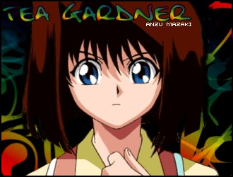 | Tea is the only one of Yugi's friends who always seems to have her feet one the ground. She keeps her head clear and focused and will always cheer for Yugi and his friends. She's been friends with Yugi for years. Her friends are the most important thing to her. When one of her friends are in trouble, she'll be right there helping them through it. She's not the best duelist, but she can still put up a good fight. Tea also has feelings for Yugi. In fact, once when Yami Yugi was feeling depressed, Yugi set them up on a date. ^^ She may not have magically powers, but Tea is the greatest friend that anyone could ever ask for. |
| 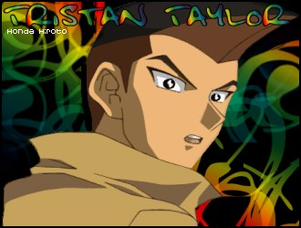 | Tristan becomes friends with Yugi shortly after Joey does. Both he and Joey were once bullies, but have since changed their ways. Joey is also Tristan's greatest friend. When one of them is in trouble, the other one always comes to the other's aid. Tristan may not be a top duelist, but he's a great friend. Even if he's stuck at the sidelines, he'll do whatever he can to help out the people around him. At the Duelist Kingdom, Tristan breaks off from the others in order to save Mokuba. Even with no magically powers, Tristan is a great ally. Much to Joey's dismay, Tristan seems to have feelings for Joey's little sister, Serenity. He enjoys spending time with her, and even stays by her side when she's in the hospital. Even though he fights with Joey all the time, it's all in good fun, and they're really the best of friends. |
| 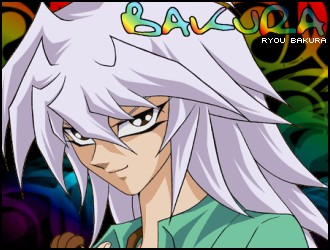 | Bakura may be an under-rated character, but don't underestimate him. He may just surprise you. He plays an important role and is quite possibly the most confusing character on the show. But he's definitely one of the most interesting characters you'll ever come across. Unlike Yugi's other half, Bakura's dark side isn't very nice. In ancient times, he was a thief. And this dark thief has his sights set on ultimate power. To gain this power, Yami Bakura is on a mission to find all seven millennium items. Using the powers of the Millennium Ring, Yami Bakura has the ability to rip souls from their bodies. The points of his ring also point in the direction of other millennium items. Yami Bakura also has a twisted sense of humor. In the first series, he turns everyone, including his other half, into game pieces for his own fun. To gain the power he seeks, Yami Bakura will do almost anything. When he first encounters Marik and is debating whether or not to be on Marik's side, he accepts by licking a knife and stabbing himself. Unlike other owners of the millennium items, Bakura's dark side is in control of the ring. When in control, he usual blocks out the real Bakura. For this reason, a lot of the time Bakura seems to wake up with no memory of what has happened, but the real Bakura knows one thing every single time - no matter what his dark half has been up to, it's not good. Perhaps Yami Bakura does this to avoid interference. Or perhaps he unconsciously does this to protect the innocence of his other half. Even though Yami Bakura doesn't seem to care about anyone but himself, and wounds Bakura's body many times, the only other person he even slightly cares about is the real Bakura. A few times he even says that no matter what, he'd never let anything happen to Bakura (Of course he says this is a way that makes one think that Yami Bakura only cares about the body he's in). The real Bakura is often mistaken as a shy loner or a wimp. This is not the case at all. Upon realizing his evil half, Bakura noticed that not only he was in a lot of pain, both physically and mentally, but the people around him were constantly put into dangerous situations aswell. Bakura felt that the only way to protect the people he cared about was to distance himself from them. Bakura has a fighting courageous spirit. He never gives in to his dark half and fights against him until the end. On a few occasions, Bakura even sacrifices himself in order to allow his dark half to be defeated. The real Bakura may be enslaved, but with what little free will he has, he puts up a fairly strong fight. Somewhere deep inside of him, two lost souls are waiting to be freed. |
| 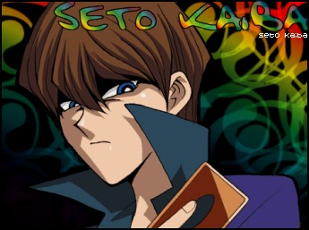 | Seto Kaiba is known worldwide as a top duelist and as the president of Kaiba Corporation. He is also a genius and created much of the duel monster technology. He owns three of the legendary Blue Eyes White Dragon cards and plays them in almost every duel he is in. Even though he's an expert duelist, he shies away from human content. He spends more time with his machines than actual people. For this reason, he has a rather cold personality. All he seems to care about is being the best, and he's determined to take down all those that stand in his way. And it's for this reason that he and Yugi are forever rivals. However, Kaiba also has a kinder self. When he was young, he was always smiling and cheerful, but his painful childhood made him avoid human contact due to the fear of rejection. But Kaiba does have a heart. He cares about his little brother Mokuba more than any other person in the world. Kaiba received the god card, God Of Obelisk, from Ishizu. There's something very mysterious about this. Only people with certain ancient abilities are able to use the god cards, however, Kaiba doesn't have any of the millennium items. The truth is that Kaiba is the reincarnated form of someone from ancient times. Kaiba and Yami Yugi battled in the past, but as all the memories of that time have been erased, Kaiba knows close to nothing of this. In his battle with Ishizu, Kaiba sees visions. It would seem as if Kaiba and Ishizu have some strange connection even if they do not yet realize it. Also, unknown to Kaiba, Marik's millennium rod once was his. Kaiba doesn't understand ideas such as friendship, but after watching Yugi and his friends, Kaiba begins to understand the true power that comes from trusting others. Although he'd never admit it, he even helps Yugi and his friends out from time to time. Kaiba is a man determined to get what he wants and defeat Yugi, his eternal rival. The mysteries of Kaiba's past shed light onto the greatest mysteries of all. And Kaiba's cold heart is slowly being thawed. |
| 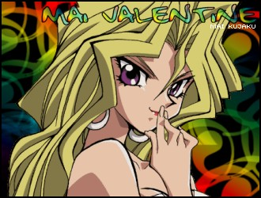 | Mai is a top duelist that the gang meets at the Duelist Kingdom. At first it appears that she's interested in nothing more than the prize money, but after hanging out with Yugi and his friends, she realizes the true meaning of friendship. Her deck revolves around the Harpy Lady card, and in every duel she plays, she uses this card as much as she possibly can. Even though it may not seem like it, Mai is really full of good advice and is always trying to help. There are many interesting ways to interpret what she does. She'll duel someone just to raise their spirits or to allow them to overcome something within themselves. In a battle with Tea, Mai did a noble thing and forfeited even though she could have easily won. There also seems to be something between Mai and Joey. Many times, Mai runs to his aid when he's hurt. Also, after Mai battles Marik and pretty much loses her life, it's Joey that comes to her aid. And it's also Joey that makes the ultimate sacrifice to battle Yami Marik for her sake. Mai may seem like a glamour girl, but she's really one of the most powerful female characters in the show with a loyal and true fighting soul. |
| 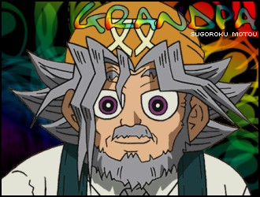 | Solomon is Yugi's grandfather. Ever since Yugi was little, he's been taking care of him as his guardian. Solomon was an archeologist and made many trips to Egypt. He and his friend were the first ones in the scientific community that really noticed that the duel monsters card game had connections to ancient Egypt. He is also the one that gave Yugi the pieces of the mysterious Millennium puzzle. Solomon is an expert duelist and taught his grandson all that he knew about the card game. He even gave Yugi is own deck, which Yugi uses in almost every battle. Solomon also taught Joey how to play the card game. He believes in the heart of the cards and teaches these principles to those he cares about. |
| 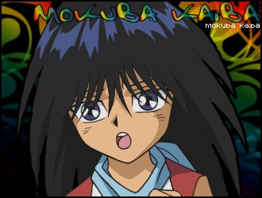 | Mokuba is Seto's younger brother. Mokuba cares about his brother more than anyone else in the world. Vise-versa, Seto feels the same way towards Mokuba. Both of them will risk live and death just to be together, and they share a remarkably strong brotherly bond. When they were young and at an orphanage, Seto was chosen by many people for his genius, but refused everyone that wouldn't take Mokuba aswell. After they were adopted, it would seem that their new step-father only wanted Seto's genius and skill for his own. Seto spends almost all of his time with machines. Mokuba likes to spend time with his brother and therefore is one of the few people who can work lots of Kaiba's gadgets. However, unlike his brother, Mokuba feels a strong sense of friendship towards Yugi and his friends. |
| 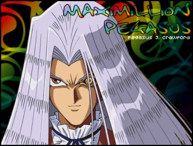 | At first Pegasus appears to be the cold-hearted villain of the first season, but there's more to him that meets the eye... When Pegasus was young, he met a girl named Cynthia. It was love at first sight and they spend all their time together. At this point in time, Pegasus was an artist and he loved to paint gorgeous portraits. With Cynthia, Pegasus was truly happy. They were to wed, and he thought nothing could go wrong, but fate wasn't so kind to the young boy. Cynthia died just as they were about to be married, and Pegasus was crushed. Devastated, Pegasus became depressed and stopped painting. The smile he once wore disappeared from his face. But in this time he also became very determined. Pegasus was willing to do anything to get her back. After hearing of the ability to raise the dead, Pegasus traveled to Egypt. There he searched for anything that could help him in his quest. One day, he saw a mysterious man on he street. He followed that strange man (Shadi) to a tomb. There, his right eye was gouged out and replaced by the metal one - his millennium item. This eye allowed him to see things he never imagined before - and even allowed him to see his precious Cynthia. While in Egypt, he learned of the ancient duel monsters card game. After he returned to America, he adapted this game through his company - Industrial Illusions. He modernized it and added a few cards of his own. He's the modern "father" of the card game. His Millennium Eye allowed him to see into other people's minds. This came in handy when he played the card game. He looked into the minds of his opponents and viewed their strategies and cards. Using this knowledge, and his already impressive skill as a duelist, Pegasus was incredibly hard to defeat. Pegasus could also use his eye to capture souls into cards. He does this to Yugi's grandfather, Mokuba, and Kaiba. After Pegasus is defeated by Yugi, his world falls apart. His true intentions are finally revealed. He wished to take over Kaiba Corporation just so he could use their technology to try and bring back his dead wife. After the duel, Pegasus keeps his word and releases the souls that he captured. He also runs into Yami Bakura after his final match. But in his weakened state, Pegasus is no match for Yami Bakura and the evil one wins. He pulls out Pegasus's millennium eye and adds it to his collection. |
 |
Marik is definitely one of the most creepiest characters in Yu-gi-oh. He is the owner of the Millennium Rod. He is also a member of the Ishtar family. On Marik's back is engraved an image that serves as the pharaoh's memory. When he was young, he went through a ceremony that placed in on his back. He had a hard childhood and from the darkness within his heart, Yami (Dark) Marik was born. His father was killed and Marik was told that this was the pharaoh's wish. Since this point in time, Marik has felt hatred towards Yami Yugi and wished to cause him as much pain as he possibly can. Marik wishes to gain control over all three god cards and then overthrow Yami Yugi and become the new pharaoh. Marik is cold hearted for the most part. He owns the god card of Ra and uses its mighty powers. With the powers of the Millennium Rod, he takes control of other people's minds and bodies. He has very little caring for the people around him and will even sacrifice his henchmen if it helps him for his cause. But besides all this darkness, in comparison, Marik's Yami form is much much much worse. Yami Marik was born long ago when Odeon was put in danger, but unlike his other half, Yami Marik cares about no one at all. He doesn't even care about Marik - as the real Marik is oblivious to the truth that Yami Marik is the one that killed his father. Yami Marik merely wishes to obliterate the entire world and create one of his very own. And to achieve his goals, Yami Marik will do whatever it takes. He'll kill anyone who crosses his path - Yugi and his friends, and even those that the real Marik hold dear. His thirst for blood seems to have no end. However, even though Marik isn't much better than his darker half, he fights against him. Perhaps, someday the innocent child deep inside will come to life again. |
| 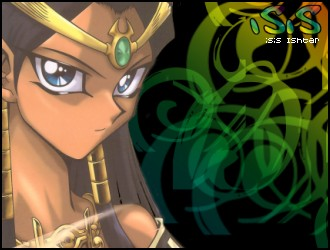 | Ishizu is Marik's sister and a member of the Ishtar family. She, too, possesses a millennium item - the Millennium Tauk. It allows her to see visions of the future. She does not believe in what her brother is doing. She, herself, once held one of the three legendary god cards. In the hopes that he'd help her stop Marik, Ishizu gave her god card - God Of Obelisk - to Kaiba. She also understands some of the history of the millennium items and is the first to tell Yami Yugi of the existence of his past memories. Ishizu is also a top duelist and shouldn't be taken very lightly. She's one of the most powerful female characters in the series. However, there's a lingering darkness around her. She worries for her brother and of the future she sees. During her battle with Kaiba, Kaiba sees a vision and is able to change the course of the future that Ishizu originally predicted. Kaiba gives her a sense of hope, and the pessimistic view that her visions gave her seems to fade. Noticing this, she gives her millennium item to Yugi. But now that the future has changed, anything can happen... |
| 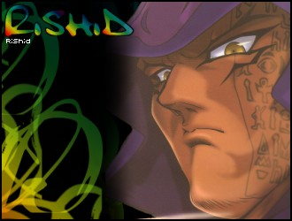 | Odeon is Marik's most trusted henchman and is also Marik's best friend. Before Marik was born, the Ishtar family did not have a heir and were going to have young Odeon serve this problem. However, Marik was born and Odeon's purpose was lost. Growing up together, Marik and Odeon were close. After Marik's back was marked, Odeon scared himself so that Marik would not have no be alone. Odeon was taken in by the Ishtar family. However, when Marik's father attacked Odeon, Marik's dark side was released and Yami Marik was born. Odeon may be one of the darker characters in the series, but he's loyal and true to Marik, and gladly follows his word to the letter - even if it means his own death. |